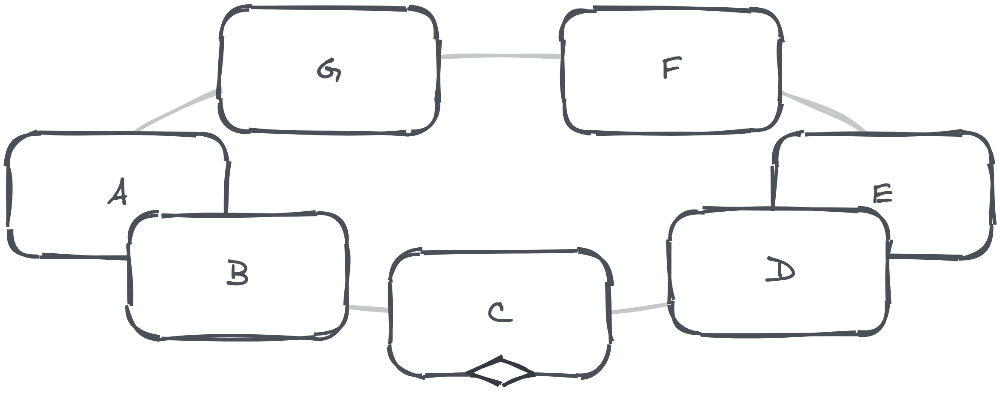

<div ref="streamContainer" class="stream-container">
    <div class="post-list-container post-list-container-shadow">
        <div class="post">
            <div class="post-head-wrapper"
                 style="background-image: url('/2021/03/01/新动力/pic1.jpeg')">
                <div class="post-title">
                    新动力
                    <div class="post-meta">
                        <time datetime="2021-03-01T15:51:30.000Z" itemprop="datePublished">
                            2021-03-01 15:51
                        </time>&nbsp;
                        
                        
                        <i class="material-icons" style="">folder</i>
                        
                        <a href='/categories/Blog/'>Blog</a>
                        
                        
    
                        
                        
                        <i class="material-icons" style="">label</i>
                        
                        <a href='/tags/Blog/'>Blog</a>
                        
                        
                    </div>
                </div>
            </div>
    
            <div class="post-body-wrapper">
                <div class="post-body">
                    <!-- no node -->

<span id="more"></span>

<blockquote>
<p>讲实话，最近有些焦虑……一直在思考人为什么活着，为 什么活着？<br>这里就不深入了，看看春节月我都做了些什么吧～</p>
</blockquote>
<h2 id="任务进度"><a href="#任务进度" class="headerlink" title="任务进度"></a>任务进度</h2><ul>
<li><strong>「日本語学習計画」</strong>：语法及词汇 <em>仅学了 <strong>1</strong> 页</em></li>
<li><strong>「计算机图形学」</strong>：材质与外观 <em>停滞</em></li>
<li><strong>「锻炼身体」</strong>：简单运动，爬公司楼梯、散步</li>
</ul>
<blockquote>
<p>自己好懒惰啊，动漫疯狂看，游戏疯狂玩。就是没办法坚持上面的事情。愤怒！<br>始终相信万事都不难，贵在坚持，只是我没坚持住……</p>
</blockquote>
<h2 id="ECMA-262-进度"><a href="#ECMA-262-进度" class="headerlink" title="ECMA-262 进度"></a>ECMA-262 进度</h2><p>阅读版本：ECMAScript® 2020 language specification, 11th edition (June 2020)</p>
<p>讲实话，看英文文章大多借助翻译工具加自己的理解，虽然不能很完整的还原细节（大概率会漏）。不过没关系，至少对大致有了认识。</p>
<p>目前进度：<a target="_blank" rel="noopener" href="https://262.ecma-international.org/11.0/#sec-organization-of-this-specification">4.4 Organization of This Specification</a></p>
<p>摘抄内容：</p>
<blockquote>
<p>The remainder of this specification is organized as follows:<br>Clause 5 defines the notational conventions used throughout the specification.<br>Clauses 6-9 define the execution environment within which ECMAScript programs operate.<br>Clauses 10-16 define the actual ECMAScript programming language including its syntactic encoding and the execution semantics of all language features.<br>Clauses 17-26 define the ECMAScript standard library. They include the definitions of all of the standard objects that are available for use by ECMAScript programs as they execute.<br>Clause 27 describes the memory consistency model of accesses on SharedArrayBuffer-backed memory and methods of the Atomics object.</p>
</blockquote>
<p>到目前为止，规范的内容已进行了介绍，后续将是对规范中的细节进行讲解，我们敬请期待吧。</p>
<h2 id="CSS3-三角函数实现-2-5D-动效实践"><a href="#CSS3-三角函数实现-2-5D-动效实践" class="headerlink" title="CSS3 + 三角函数实现 2.5D 动效实践"></a>CSS3 + 三角函数实现 2.5D 动效实践</h2><p>需求：轮播组件</p>
<p>需求来的很突然（因为 CSS 这块的薄弱，所以称之为突然），不过我一向不怕这些，我喜欢迎难而上。</p>
<p>说是一个轮播组件的确没错，但是这个组件是倾斜的（设计图我就不放了，我怕挨打）。</p>
<p>我尽可能的用文字描述一下，类似<a target="_blank" rel="noopener" href="https://element.eleme.cn/#/zh-CN/component/carousel#qia-pian-hua">Element Carousel 走马灯</a>组件使用卡片化的效果，可透视至后方，椭圆的视觉效果，并且从上 45 度角向下看的视觉效果。</p>
<p>我还是画个草图吧……</p>
<p></p>
<p>起初我打算使用 <code>transform</code> 的旋转和变换实现透视圆形轮播，在外层使用 <code>perspective</code> 实现视角下沉，但是经过实践我发现这并不可行（或许是我的姿势有问题）。但是就算这个方式实现了，卡片的视角会有问题，因为使用了旋转，所以会有变短的效果。</p>
<p>后来我发现其实可以只用 <code>transform</code> 来实现，卡片位置使用相对定位控制，那么如何让卡片位置形成这样的椭圆形呢，那就是使用三角函数<a target="_blank" rel="noopener" href="https://wuu.wikipedia.org/wiki/%E4%B8%89%E8%A7%92%E5%87%BD%E6%95%B0">[维基]</a>！</p>
<p></p>
<p>利用公式，计算卡片坐标位置。以及使用一些简单的算法来计算出当前卡片位置的权重，设置 <code>z-index</code> 来实现层次感。</p>
<p>最后加入动画效果及自动播放旋转功能即大功告成！（其他细节部分我这里就不谈了）</p>
<p>记录一个坑：在使用类似 <code>Math.sin</code> 时，入参千万记得把角度转成弧度。比如 <code>90 * Math.PI / 180</code> 。</p>

                </div>
            </div>

            
            
            
    
            
    
            
        </div>
    </div>
    
</div>


